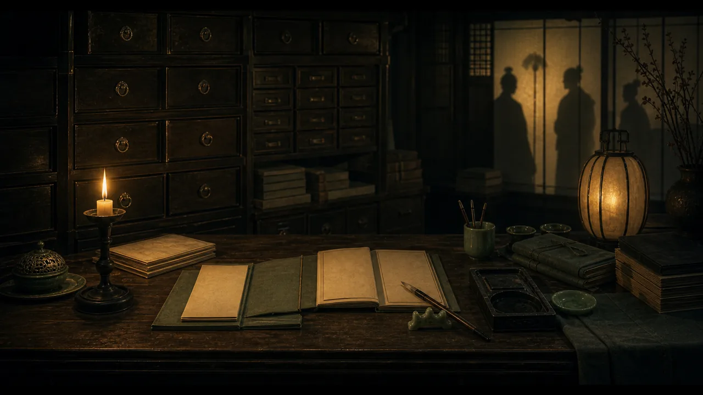

蒲松龄
《聊斋志异》的作者，也是本站第一批故事的主要来源人物。
作者、主角、判官、书生、受困者和见证人，按故事关系重新归档。

《聊斋志异》的作者，也是本站第一批故事的主要来源人物。
《搜神记》相关故事的传统来源，用来把站点从清代聊斋扩展到更早志怪。
为父申冤、一路上诉到阴司深处的人物，是阴司制度线的核心。
受制于妖物却主动求脱身的女鬼，是人物索引里的关键受困者。
荒寺夜宿者，以克制和守信改变故事方向。
水边故鬼，不把自己的苦处转嫁给他人。
求捷径、信表象、迟疑判断的人物类型，可连接《崂山道士》和《画皮》。